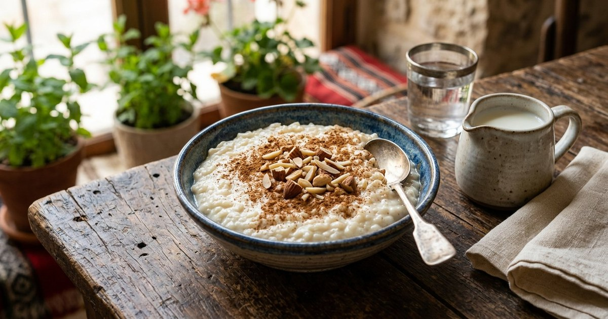

أرز بالحليب كريمي: حلوى سهلة على الموقد
حلوى الأرز بالحليب منزلية: أرز قصير الحبة، حليب وسكر وفانيليا، تحريك هادئ حتى يكثف، ونكهات القرفة وماء الورد مع حفظ آمن.

الخلاصة السريعة
أرز بالحليب حلوى قديمة بسيطة: أرز قصير الحبة يُطهى ببطء في حليب مع سكر وفانيليا مع التحريك المستمر حتى يكثف، ثم يُقدَّم دافئًا بالقرفة أو باردًا بعد أن يبرد. السر في النار الهادئة والتحريك؛ الحليب المغلي بعنف يهرب ويحترق في القاع.
لماذا الأرز قصير الحبة؟
الأرز قصير الحبة (المصري أو حبوب الحلوى) يطلق نشا أكثر أثناء الطهي فيعطي قوامًا كريميًا متماسكًا، بينما الأرز طويل الحبة يبقى حباته منفصلة ويحتاج وقتًا أطول ليكثف. إن توفر لك طويل الحبة فقط فزد كمية صغيرة من النشا الذائب في الحليب البارد لتعويض القوام، لكن النتيجة تختلف.
المكونات
- نصف كوب أرز قصير الحبة (يُغسل ويُنقع 15–30 دقيقة).
- 4 أكواب حليب كامل الدسم (أو قليل الدسم وتزيد ملعقة نشا).
- نصف كوب سكر (ويُعدَّل حسب الذوق).
- ملعقة صغيرة فانيليا، أو ملعقة ماء ورد أو زهر للرائحة.
- قرفة مطحونة ومكسرات (لوز أو فستق) للتقديم.
الخطوات
- اغسل الأرز جيدًا وانقعه ربع ساعة، ثم صفِّه.
- ضع الحليب والأرز في قدر سميك القاع على نار متوسطة حتى يقترب من الغليان، ثم اخفض النار فورًا.
- اطبخ على نار هادئة جدًا 30 إلى 40 دقيقة مع التحريك كل دقيقة أو دقيقتين بكفالة خشبية.
- عندما يلين الأرز تمامًا ويبدأ المزيج بالتكثف أضف السكر والفانيليا وحرك حتى يذوب.
- استمر دقائق إضافية حتى يصبح القوام أثقل قليلًا من المطلوب النهائي (سيكثف أكثر وهو يبرد).
- اسكبه في أطباق التقديم واتركه يبرد، وزينه بالقرفة والمكسرات.
ضبط القوام
القاعدة المهمة: ارفع القدر من النار والحلوى «أرق قليلًا» مما تريد، لأنها تتماسك أثناء التبريد. إن أصبحت كثيفة جدًا أضف حليبًا ساخنًا وحرك. وإن بقيت سائلة بعد أن نضج الأرز تمامًا فذوّب ملعقة نشا في ربع كوب حليب بارد وأضفها مع التحريك دقيقتين إضافيتين على نار هادئة.
نكهات تخصّصها لبيتك
القرفة مع السكر هي الزينة الكلاسيكية. ماء الورد أو ماء الزهر يضاف في النهاية (حرارته تتبخر رائحته إن أضيف أثناء الغليان الطويل). الهيل المطحون رشة خفيفة، وجوزة الطيب رشة صغيرة، أو قشر ليمون مبشور يُغلى مع الحليب ثم يُرفع قبل التقديم. للحصول على غنى أكثر استبدل كوبًا من الحليب بكوب كريمة أو أضف ملعقة قشطة في النهاية، وقلل السكر قليلًا عندها.
التقديم
أرز بالحليب لذيذ دافئًا وباردًا، والبارد بعد ليلة في الثلاجة يتماسك ويصبح كريميًا أكثر. زين كل طبق بالقرفة والمكسرات المحمصة قبل التقديم مباشرة. يقدم في أطباق صغيرة أو أكواب زجاجية، ويرافق الشاي أو القهوة في الجلسات العائلية.
الحفظ وسلامة الغذاء
أرز بالحليب طعام ألبان سريع التلف: لا تتركه في درجة حرارة الغرفة أكثر من ساعتين (وساعة إذا كان الجو حارًا جدًا)، وبرّده في الثلاجة في وعاء مغطى. يبقى صالحًا 3 إلى 4 أيام في الثلاجة. عند إعادة التسخين أضف قليلًا من الحليب وحرك على نار هادئة أو في الميكروويف على دفعات؛ لا تعيد تسخين الدفعة أكثر من مرة، وتخلص من أي بقايا بقيت خارج الثلاجة مدة طويلة.
حساسية اللاكتوز وبدائل الحليب
الحليب البقري هو الأساس، ولمن لا يتحمل اللاكتوز تتوفر ألبان خالية اللاكتوز تعطي نتيجة مشابهة. الحليب النباتي (اللوز والشوفان وجوز الهند) يعمل لكن قوامه أرق؛ أضف ملعقة نشا إضافية مذابة في حليب بارد، وزد التحريك. نكهة كل حليب نباتي تظهر في النتيجة، فجرّب النوع الذي يعجبك.
أسئلة شائعة
لماذا التصق الأرز بالقاع؟
نار عالية أو تحريك متباعد. اخفض النار وحرك بانتظام، واستخدم قدرًا سميك القاع يوزع الحرارة.
هل أستخدم حليبًا مغليًا مسبقًا؟
ليس ضروريًا، لكن بعضهم يغلي الحليب ثم يضيف الأرز لاختصار الوقت؛ انتبه أن الحليب المغلي وحده يهرب بسرعة إذا تركت القدر بلا مراقبة.
كم يبقى في الثلاجة؟
3 إلى 4 أيام في وعاء مغطى، وقد يتغير القوام قليلًا؛ حركه وأضف حليبًا عند التسخين.
أخطاء شائعة في أرز بالحليب
نار عالية تجعل الحليب يهرب فوق الموقد. ترك القدر دون تحريك فيحترق القاع ويفسد الطعم كله. إضافة السكر من البداية بكمية كبيرة. إخراج الحلوى «مثالية القوام» من النار ثم مفاجأة أنها تجمدت: تذكر أنها تكثف بالتبريد. نسيان التبريد السريع في بلد حار. حضر بهدوء، حرك باستمرار، وارفع القدر قبل القوام النهائي بقليل.
الخلاصة
أرز قصير الحبة يُطهى ببطء في حليب مع تحريك هادئ حتى ينضج ويثخن، ثم سكر وفانيليا ونكهة تفضّلها. قدّمه دافئًا أو باردًا بالقرفة والمكسرات، واحفظه في الثلاجة ولا تتركه خارجها. حلوى بسيطة تصنع ذكريات، وتتقنها من الدفعة الثانية.
المصادر والمراجع
رُوجعت المعلومات العامة في هذا المقال بالاستناد إلى المصادر التالية. الروابط الخارجية قد تُحدّث محتواها بمرور الوقت.